Description
Part 1:
In the later parts of this report, I will discuss raytracing. However, in order to do this, you first need to be able to generate rays and find intersections with primitives in the scene. To generate a ray, you begin with image coordinates. These are transformed into camera space, and a ray is made from the origin of the camera to this point. Then, the ray is transformed back into world space (needed for ray-tracing). The output camera ray intersects the image space, goes through, and hits whatever primitive is behind it. The next step needed as a precursor to ray tracing is generating pixel samples. To do this, I created a function that inputs a pixel's x and y coordinates. It then iterates through a predetermined number of samples and randomly adds a little bit to the x and y coordinates (without crossing into the next pixel). This is useful later to allow the entirety of the scene to be hit with rays, as opposed to very specific points. Once the new x and y coordinates are determined, I call the generate_ray function I just discussed. Once all of the rays have done whatever is needed of them, they are averaged by the number of samples and returned. The last prerequisite for ray-tracing is creating intersection algorithms for ray-triangle and ray-sphere interactions. Both of these algorithms return the normal at the intersection point and the amount of "time" for the ray to reach the intersection point.
To implement my ray-triangle intersection algorithm, I used the Moller Trumbore algorithm. The input is the ray and a triangle primitive (the verticies are given). First, two edges of the triangle are found. Then, the vector from the origin of the ray to the common vertex in the 2 edges are found (Let's call this S). Then, the direction of the ray is cross producted with one of the edges. Then, S is cross producted with the other edge. After that, the result of this is dotted with the same edge, it's also dotted with the direction of the ray, and the result of the previous cross product is dotted with S. Once this is done, each of those three results are divided by the result of the first cross product and the first edge. This gives us t (the amount of "time" to intersection), b_1 (barycentric coordinate of where in the triangle it intersects), and b_2 (barycentric coordinate, as well). Now that two barycentric coordinates are found, we can find the third. As a result, the exact hit point in the triangle, as well as the normal at the hit point, can be found using the barycentric coordinates. This algorithm is a very clever way of combining basic trigonometry with barycentric coordinates to give us the outputs we desire in the most efficient way possible.
Here are some images that use normal shading from the ray-triangle and ray-sphere intersection algorithms, as well as the generate ray and pixel sample algorithms.
Here is a banana:

Here is an empty room:
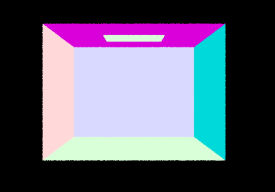Someone put spheres in the room:
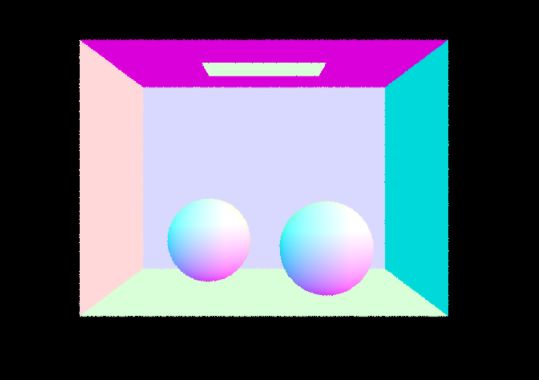Part 2:
In part 2, I created a BVH class, which allows us to easily test where a ray intersect in a scene (log(n) instead of n). This consists of two main parts; the constructor and the intersect function.
The constructor begins by iterating through each primitive in the scene (held in a vector) and adds their respective bounding box into a singular bounding box. A node is made out of this bounding box. Then, I find the largest axis of the box and sort all of the primitives in the vector in terms of their centroids along said axis. Then, I find the midpoint of the box and recursively call the constructor twice, once from the start of the vector to the mid point and once from the mid point to the end of the vector. This continues until the number of primitives in the vector is below a certain threshold. At this point, a leaf node is made (actually holds the primitives), and the recursion goes back up a level, assigning the leaf node to either the right or left child node of the higher level non-leaf node. As a result, you a tree of nodes that allow the intersection point to be found in log(n) instead of n.
My heuristic for choosing the splitting point comes from sorting the primitives and then finding the middle point. This gives us the median primitive for splitting, making sure that the BVH tree is as equal as possible.
Here are some images that are complex enough that it would take an extremely long time to render without implementing the BVH construction and intersection algorithms.
Here is a dragon.
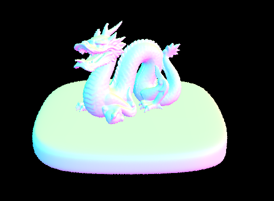Here is a statue.
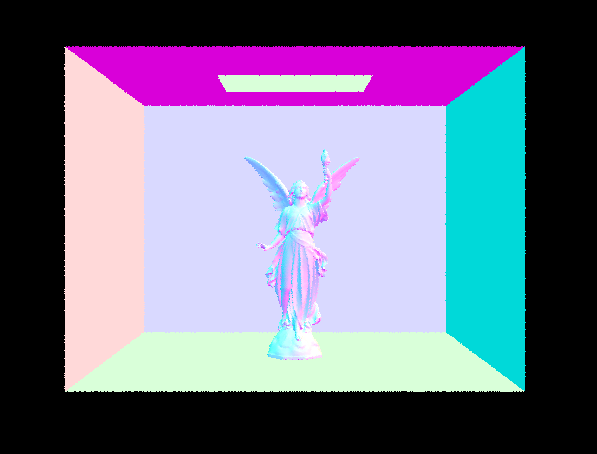Here is Max Planck! I'm sure he would've wanted to see this :)
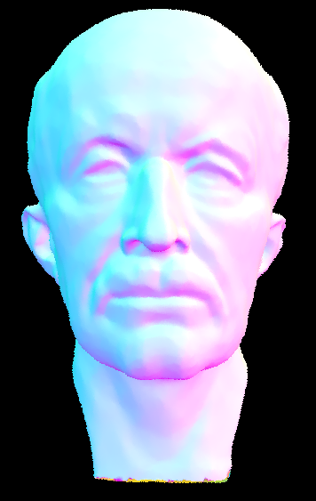Here are some moderately complex scenes. Next to each one, I included screenshots of how long they took to render both with and without BVH acceleration.
Here is a beast:
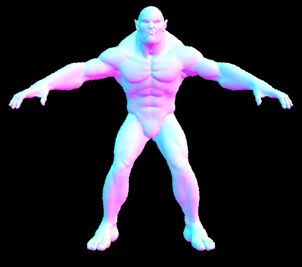This is how long it took without BVH:
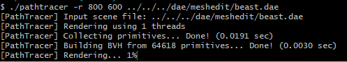This is how long it tok with BVH:
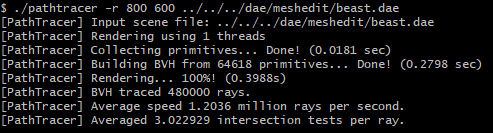Here is a cow:
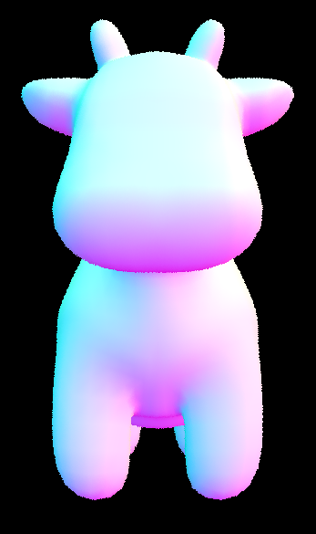This is how long it took without BVH:
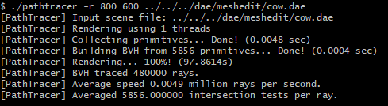This is how long it tok with BVH:

Here is a teapot
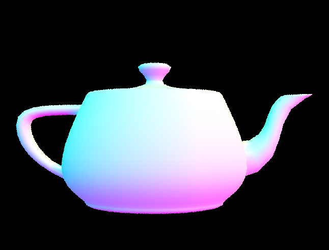This is how long it took without BVH:
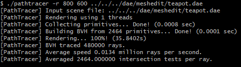This is how long it tok with BVH:
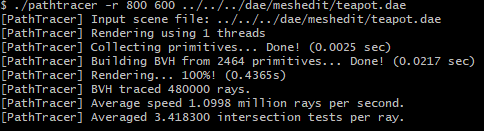The cow took roughly 100 seconds to render without BVH, but only .36 seconds to render with BVH. The teapot took roughly 36 seconds to render without BVH, but only .44 seconds to render with BVH. The beast took .4 seconds to render with BVH, but took several minutes to get to 1% rendered without BVH. However, for all three the construction of the BVH took slightly (.1 seconds-ish) longer to generate than without BVH. While the construction takes a little bit longer, the strength of the log(n) intersection algorithm due to the BVH class makes it obviously worth it. If we didn't construct this, the next parts (3, 4, 5) would have needed days to render a singular picture, at least.
Part 3:
In this part, I implemented direct lighting. To begin, I first created zero bounce lighting, where the light scource has a direct line to the camera. This is extremely easy, as you just have to return the emission from the primitive your ray intersects with.
The next part of direct lighting is one bounce, where a ray is sent to some place in the scene and the amount of light reflected off of that location into the camera is calculated. I added two different types of this. The first uses uniform hemisphere sampling. This function has an input ray and intersect primitive. First, I found the hit point on the primitive and determined the user inputted number of samples taken per ray. Then I iterated through each uniformly distributed random sample, which returns a vector to the sample location. I then create a new ray that originates at the reflective hit point and points in the direction of the sample. I then check if the ray interests with any primitive. If it does, I get the emission from the privitive. If this light points outwards towards the reflective point, I keep track of the amount of light. Then, that amount of light is scaled to take into account the amount of light lost due to the reflection angle (cos(angle from new ray to reflective primitive normal)), the probability of light actually pointing in the right direction (due to being a hemisphere light it's divided by 2*pi), and the bidirectional scattering distribution function (how much light interacts with the surface, which is 1/pi in this case). Then once all of these light values are added due to the number of random samples taken, the total is divided by the number of samples and returned, giving a good estimate of how much light is reflected at this point.
There is another type of direct lighting; importance sampling. This begins similarily to hemisphere sampling, but now I iterated through all of the lights in the scene. If the light is a point light source, then I sample it and create a new ray from the reflected point towards the intersection direction. Because I iterated through each light, instead of random direction, it is possible that there is another primitive in the way, however, blocking the light source from hitting the reflection point. To combat this, I check if the ray intersects with any primitive in a certain range (sampling the light returns the distance to it), and if it does, no light is added. However, if no primitive is hit, then there is a direct ray from the light source to the reflection point, so the value is scaled in the same way that was done in hemisphere sampling (although the probability changes). This is only done if the light is a point source, so if the light is a hemisphere source, then I iterate through a user inputted number of samples, check to make sure there isn't another primitive in the way, and scale the light in the same way. In this case, the total light is averaged by the number of samples, unlike for point sources. After all of the light from point and hemisphere sources are added, I return.
Throughout the entirety of this, I made sure to use the camera and object frames appropriately when calculating the amount of light reflected, new ray vector, etc...
Here are some images showing both the hemisphere and importance lighting techniques:
This is a bunny using hemisphere lighting:
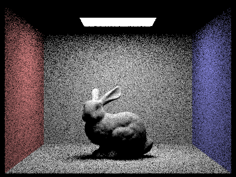This is a bunny using importance lighting:
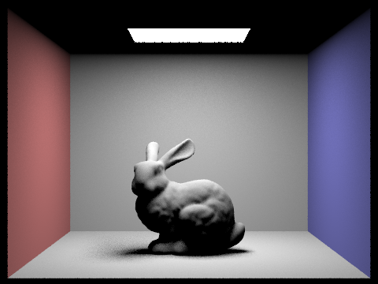This is a dragon using hemisphere lighting:
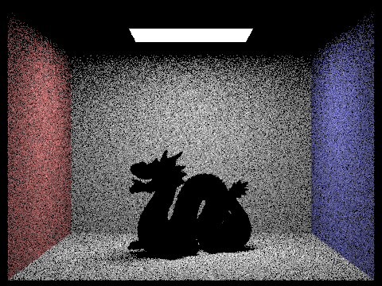This is a dragon using importance lighting:
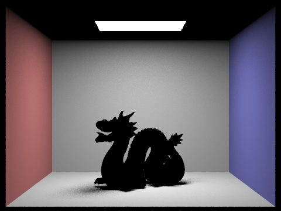This is a sphere scene using hemisphere lighting:
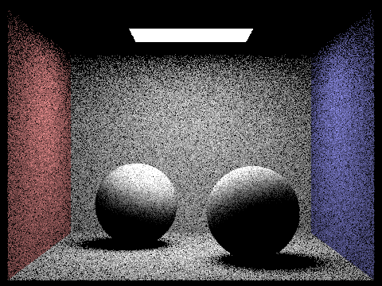This is a sphere scene using importance lighting:
These next pictures make it clear how increasing the number of samples per light at the reflection point improves the generated image (Using importance light sampling and one sample per pixel for the camera ray).
Here is a sphere scene that samples and generates 1 light ray at the reflection point.
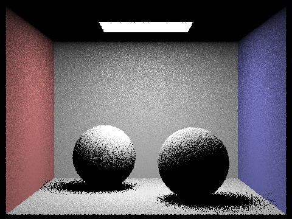Here is a sphere scene that samples and generates 4 light rays at the reflection point.
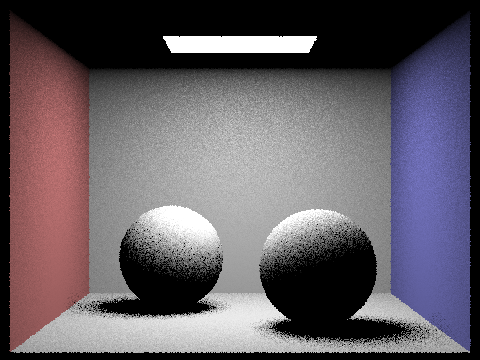Here is a sphere scene that samples and generates 16 light rays at the reflection point.
Here is a sphere scene that samples and generates 64 light rays at the reflection point.
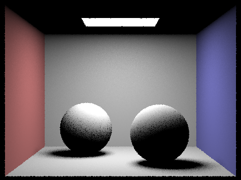It is fairly obvious that increaing the number of samples decreases the noise. Doing so allows intermediate gray colors to show up and blends the soft shadows, making the images much clearer. This is more noticeable on soft shadows (where a primitive is on the verge of sitting between the reflection point and light source), as the random sampling causes the shadow ray to intersect with a primitive sometimes, but not all. The shadows fully underneath a primitive don't change, as the shadow rays hit the primitive every time.
Another thing that is easily noticed from the pictures comparing hemisphere sampling to light sampling is that hemisphere sampling is significanly more noisy. This is due to the complete randomness in sampling; it is much more unlikely to hit a light source than if you directly point a ray at the light source and see if a primitive is blocking the light (importance light sampling).
Part 4:
In part four I implemented indirect lighting. In other words, there are >1 bounces, as opposed to a singular reflection point. To do this, I begin by calculating the hit point from the original camera ray and call my one_bounce_radiance function/s from part 3. This returns the amount of light from the first bounce. I then sample a new ray from the first bounce intersection point and create a new ray that originates at the intersection location and points towards the sampled angle. This new ray can now be thought of as another "camera ray". I then test to make sure that this new ray intersects with another primitive in the scene. If it doesn't, I return the amount of light calculated so far (equivalent to one bounce). If it does hit a primitive, I recursively call the function, hence it being a "camera ray". We can then find the new amount of light reflected (bounce 2) and run through everything again. This recursion continues until either the user inputted maximum bounce is reached or the new "camera ray" doesn't intersect with anything. At this point the recursion stack unravels and the amount of light at each recursion "level" is scaled (in the same way as direct lighting) and added. It's not the exact same as direct lighting, however, because the light from the previous iteration is scaled each time, so the amount of light added from a distant bounce (5, for example) is significantly less than one from the first bounce. By recursively creating "camera rays" at the new intersection points, it's grabbing all of the light from multiple reflections simultaneously, otherwise known as indirect lighting or global illumination.
Here are some images rendered with full global illumination. I used 1024 samples per pixel.
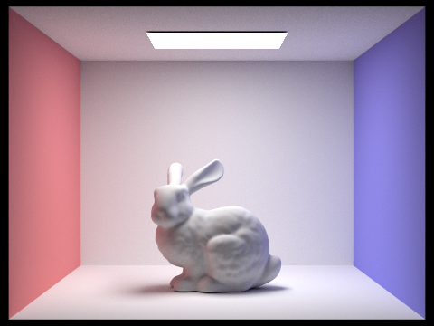 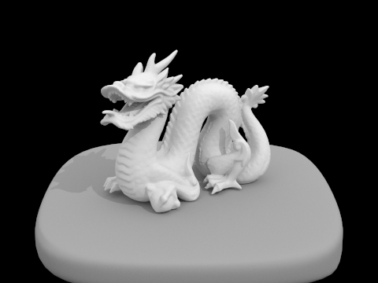These are all extremeley illuminated due to global illumination. The dragon didn't change too much from when I rendered it in a previous part (not shown in report), which makes sense. It isn't encased in a room, so there aren't very many opportunities for bounces to occur.
Here is a sphere scene to compare only direct to only indirect illumination. Only indirect means that all of the bounces, except the first bounce, is added.
This is a sphere scene generated with only direct lighting.
This is a sphere scene generated with only indirect lighting.
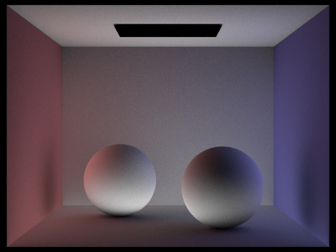In the direct only image, the spheres is very light and there are lots of shadows underneath the spheres (which is what you would see if the room wasn't very reflective). Using only indirect illumination causes a very different picture (Note: My 8 year old laptop was overheating at this point so I only rendered bounce 2 and 3, I believe). For one, the ceiling is white (it was black in the direct picture). This is because the ceiling is parallel to the light source, so it can't receive any light in the first bounce. But once the second or third bounce is added, reflections off of the walls and spheres illuminate the ceiling. This also applies to the shadows below the spheres.
In this set of 5 pictures, I set the number of samples per pixel to 1024, giving us an extremeley high res and accurate picture, as the averages converge to a true, real-life value. However, each picture shows the amount of light added from a specific bounce, not the accumulated amount.
Here is a bunny generated showing the first bounce lighting
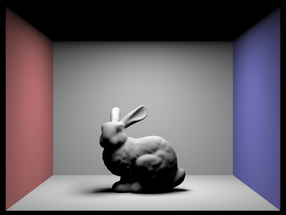Here is a bunny generated showing the second bounce lighting
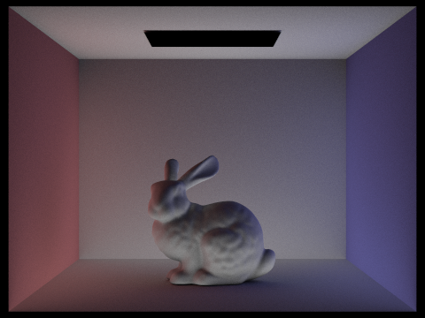Here is a bunny generated showing the third bounce lighting
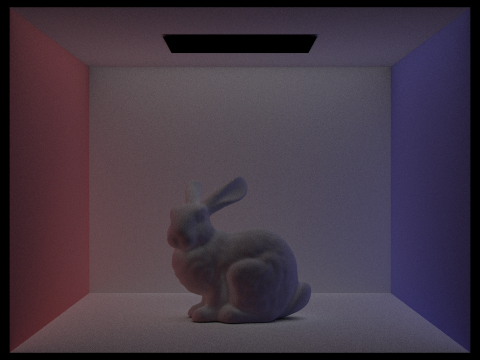Here is a bunny generated showing the fourth bounce lighting
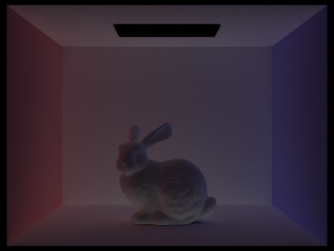Here is a bunny generated showing the fifth bounce lighting
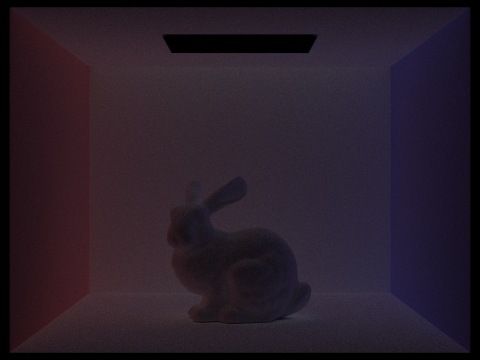It is clear that the amount contributed at a specific bounce to a full indirect lighting generation decreases as the bounce increases. I find it interesting that the second bounce illuminates the darkest parts of the scene after the first bounce the most (The legs and chest area of the bunny that isn't in line with the light source at the top of the screen, for example). The third bounce, however, seems to just illuminate the entire scene a bit more and also focuses on the shadows below the bunny (presumably reflected from the rays that illuminate the legs and chest in the second bounce). This 2 extra bounces illuminate the whole scene, hence global illumination. The fourth and fifth bounces still add light, but it's much more general to the whole scene and is quite a bit less than the earlier bounces (although it mimicks the second and third bounce for the leg/chest and shadow areas, respectively).
In this set of 5 pictures, I set the number of samples per pixel to 1024 as well. However, these differ significantly from the previous set as this shows global illumination fully in action. All of the bounce levels are added together, as opposed to showing each one individually.
Here is a bunny generated showing direct (1 bounce) illumination.

Here is a bunny generated showing the first 2 bounces added together.
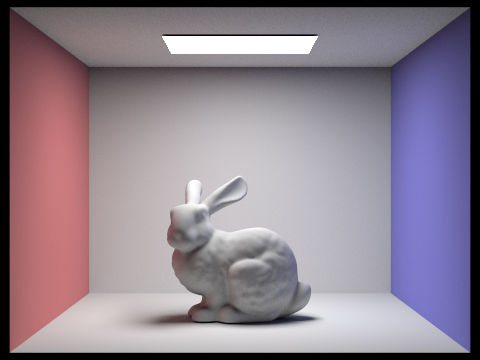Here is a bunny generated showing the first 3 bounces added together.
Here is a bunny generated showing the first 4 bounces added together.
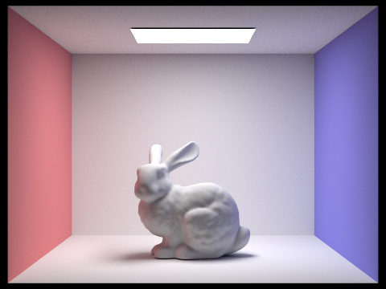Here is a bunny generated showing the first 5 bounces added together.
It is clear that increasing the number of bounces makes the entire room lighter. The largest effects occur on the ceiling and the shadows of the bunny, which are almost completely illuminated. The largest difference happens between bounce 1 and bounce 2. And by the time you are at bounce 4, increasing it to 5 has a very little effect.
Here are some examples with russian roulette on. Unfortunately, I didn't have enough time to render all of these, but I generated one with a max level of 0 and one with 3. I wish I had more time to finish this last bit of the project; I was visitng grad schools last week...
Here is max level 0:
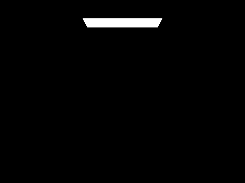Here is max level 3:
In this set of images, I used 4 light rays per light area. For each sequential picture I increased the number of samples per pixel, however.
Here is a sphere scene using 1 sample per pixel.
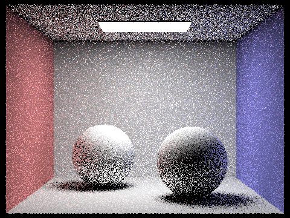Here is a sphere scene using 2 samples per pixel.
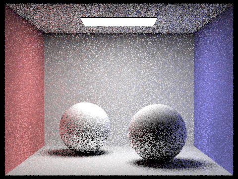Here is a sphere scene using 4 samples per pixel.
Here is a sphere scene using 8 samples per pixel.
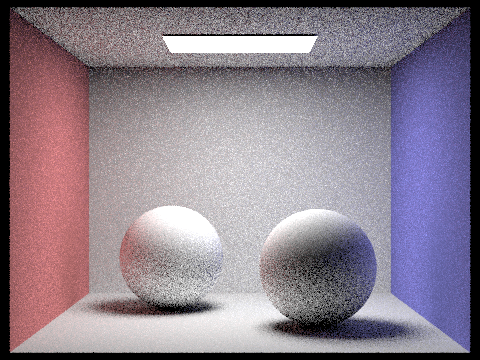Here is a sphere scene using 16 samples per pixel.
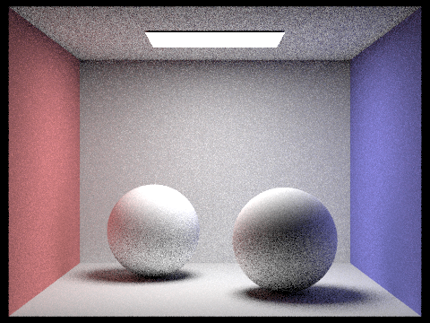Here is a sphere scene using 64 samples per pixel.
Here is a sphere scene using 1024 samples per pixel.
I really like this comparison. As the number of samples increases, the noise in the scene disappears significantly. This is due to the averaging causing the random samples at all bounces to converge to their true light values. At 64 samples per pixel, you have a decently rendered image, but it takes 1025 to reach an ideal state.
Part 5:
Utilizing adaptive sampling allows us to make the rendering process much more efficient. Basically, we adjust the number of samples per pixel depending on if it has converged enough to it's true value. As a result, areas with not much change over time can be "skipped" after a few iterations, while more complex areas that have a lot of noise use the maximum number of samples per pixel.
To do this, I found the sum of the illuminance value and illuminace variance value after each iteration. I don't check for converge in every iteration; I created a variable that allows me to check every n iterations. At this point, I calculate the mean and variance of illumanice. Next, i divide the standard deviation by the square root of the number of samples and multiply it by a constant. If this output value is less than or equal to a user inputted maxtolerance value times the mean, then I break early, and stop making samples for that pixel. I now average the total color by the real number of samples taken, not the max value.
Here is a bunny with adaptive sampling
Here is the bunnies rate of sampling
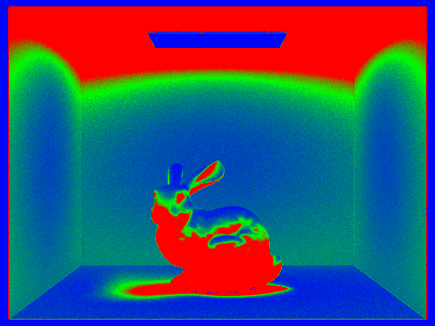Here is a sphere scene with adaptive sampling
\ 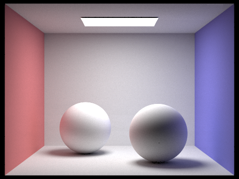Here is the sphere scene's rate of sampling
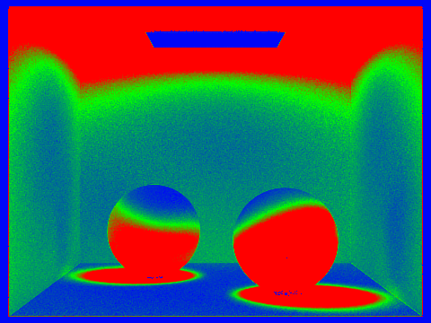